Tecnologia industrial para máquinas e automação
Máquinas especiais, automação e software para sistemas industriais
A ISAR Engenharia desenvolve soluções industriais integrando mecânica, elétrica, automação, visão computacional e software. Atuamos em máquinas especiais, sistemas autônomos e processos automatizados com projeto, documentação, fornecedores e validação técnica.
- Corpo técnico multidisciplinar
- Máquinas especiais, automação e software
- Sistemas autônomos e visão computacional
- Projeto, fornecedores e fabricação
O que a ISAR faz
Capacidades técnicas para problemas industriais que exigem solução sob medida
A ISAR atua quando o desafio exige engenharia integrada, requisitos bem definidos, escolha criteriosa de componentes e uma ponte técnica sólida entre a necessidade da produção, o fornecedor e a entrega final.
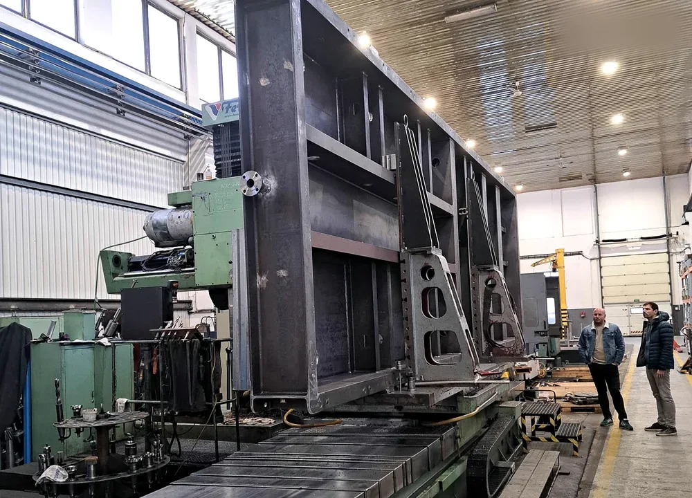
Máquinas especiais
Desenvolvimento de equipamentos industriais sob medida, do conceito técnico à documentação para fabricação, montagem e validação.
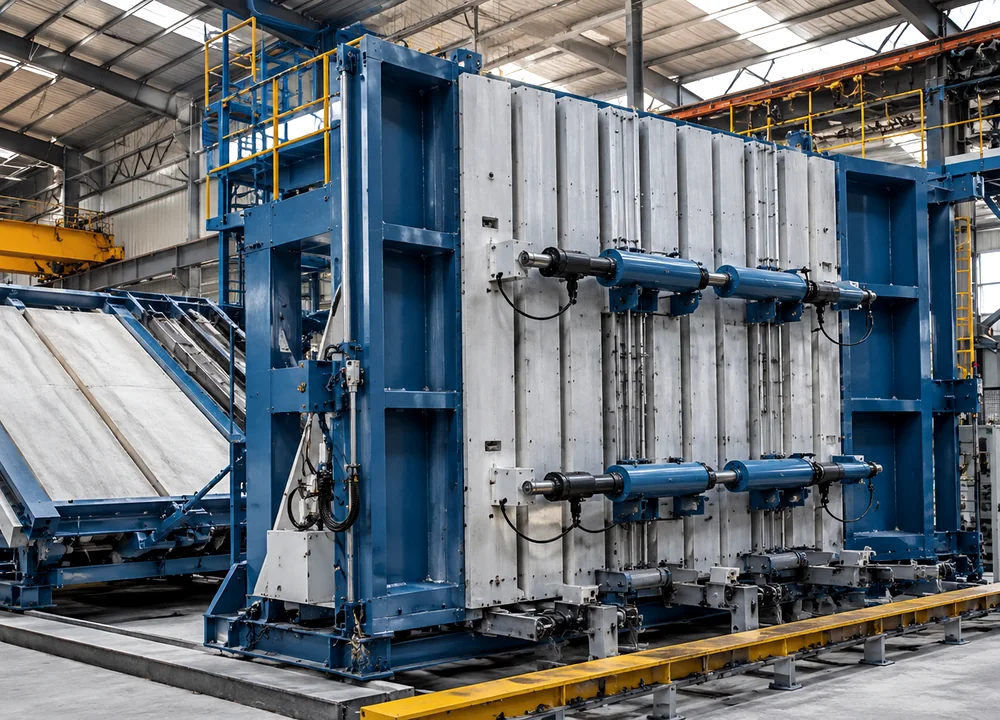
Desenvolvimento de fornecedores na China
Identificação, avaliação e desenvolvimento técnico de fornecedores chineses quando o projeto exige customização de produto, componente ou subconjunto diretamente com o fabricante.
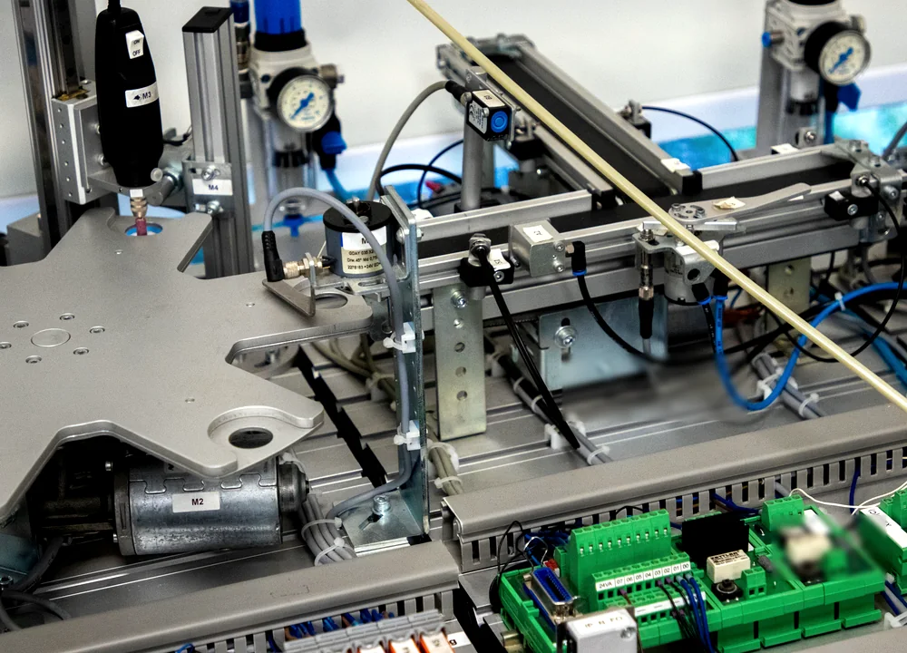
Automação industrial
Integração de sensores, atuadores, inversores, lógica de controle, intertravamentos, software e interfaces entre máquina, processo e operação.
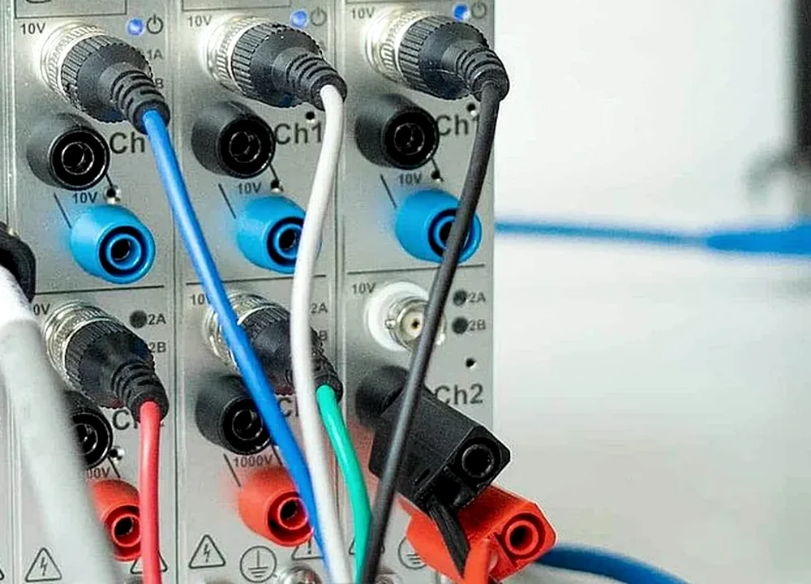
Software e visão computacional
Software para automação, máquinas autônomas, aquisição de dados, inspeção, posicionamento, contagem e validação de processo.
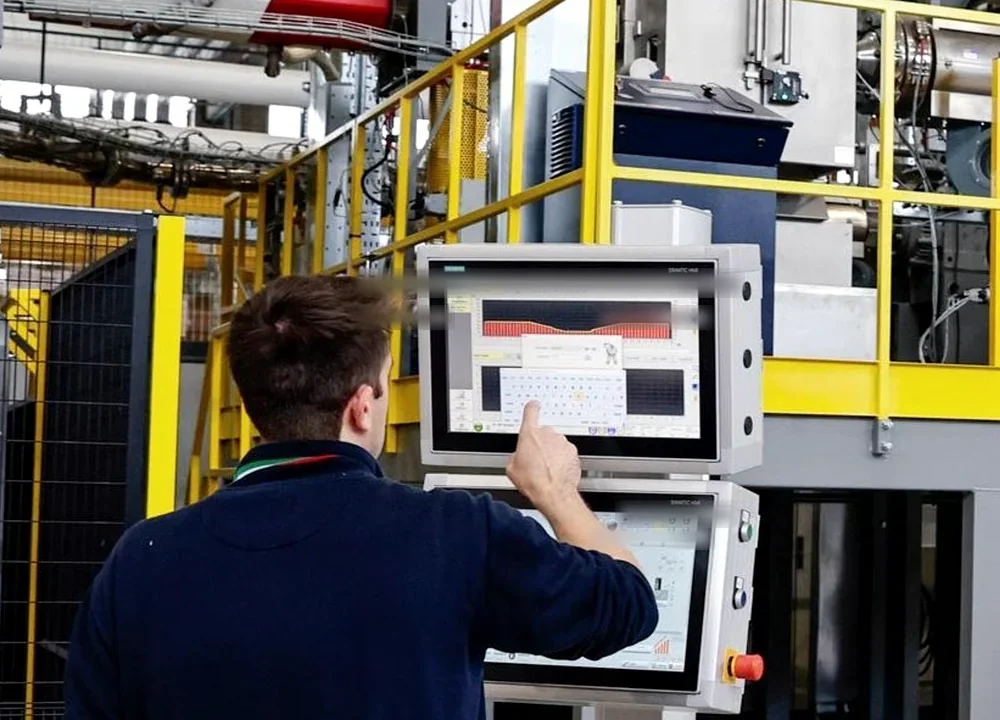
Retrofit e modernização
Modernização de equipamentos existentes com novos controles, sensores, instrumentação, segurança operacional e documentação técnica.
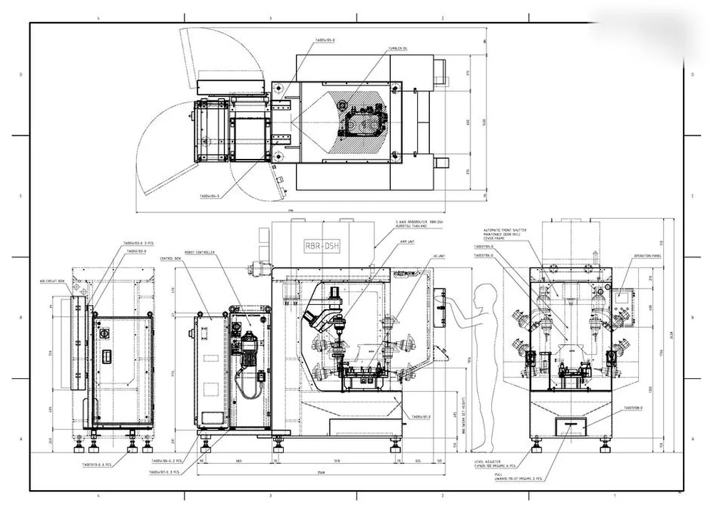
Projeto mecânico 3D e 2D
Modelos 3D, desenhos 2D, listas de materiais, documentação de montagem e alinhamento com processos reais de manufatura.
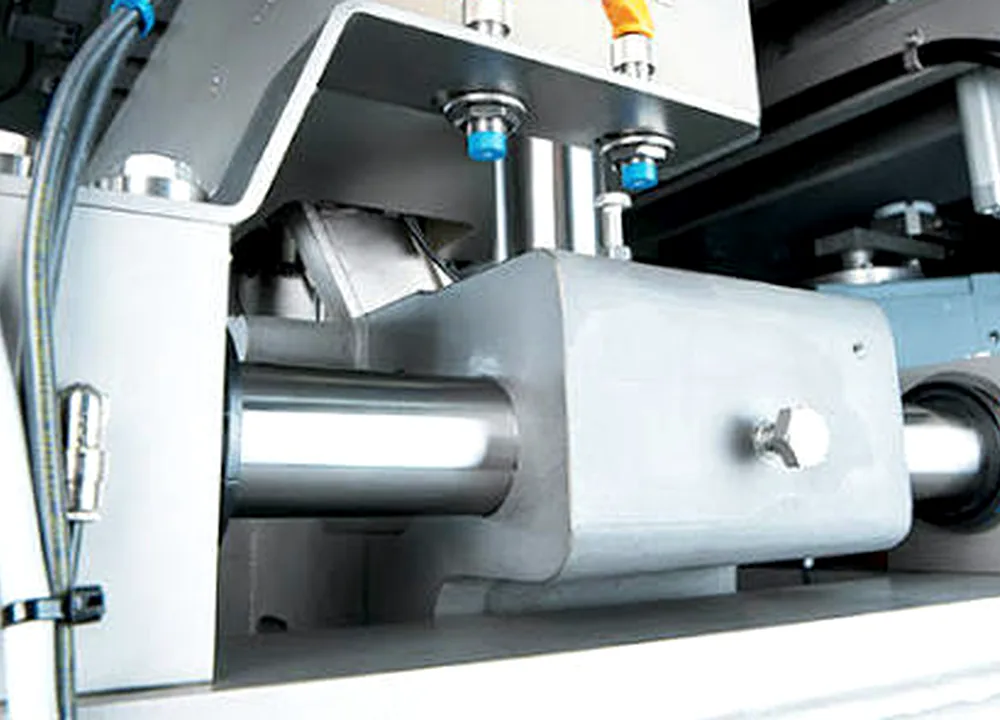
Projeto elétrico e pneumático
Diagramas, painéis, fontes, inversores, válvulas, atuadores, sensores, interfaces e especificação técnica de componentes.
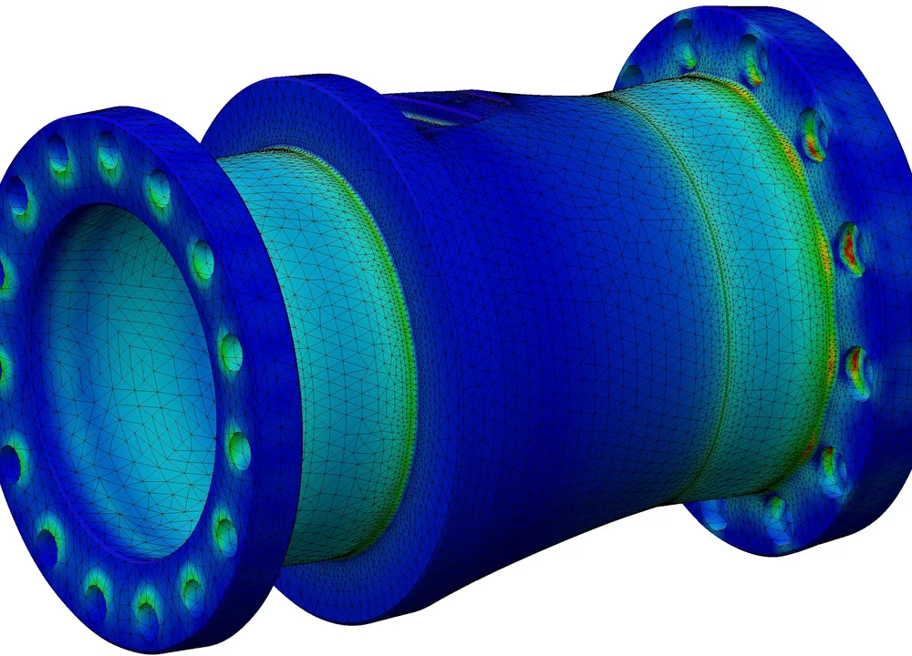
Cálculos e simulações
Análises estruturais, térmicas e fluidodinâmicas para validar componentes, mecanismos, ventilação, desempenho e margens de projeto.
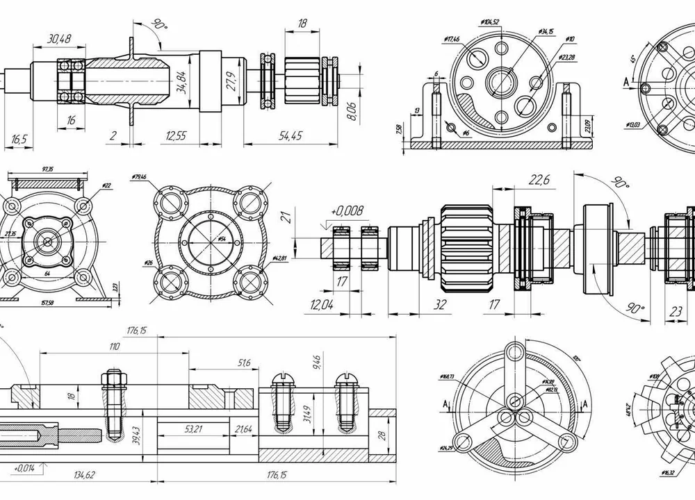
Systems Engineering
Arquitetura de requisitos, critérios de aceitação, FMEA, DFSS, QFD, planos de teste, rastreabilidade e estratégia de validação.
Corpo técnico
Estrutura técnica multidisciplinar para desafios industriais complexos
A ISAR integra engenharia mecânica, elétrica, automação e software para estruturar soluções industriais completas, com rigor técnico, visão sistêmica e foco em execução.
- Mais de 15 anos de experiência acumulada em desenvolvimento de produtos, P&D, prototipagem, validação e certificação industrial.
- Atuação em máquinas especiais, pré-fabricados de concreto, metalmecânico, energia, automação, sistemas de movimentação e integração de equipamentos.
- Domínio de requisitos, FMEA, planos de teste, design review, documentação técnica, análise de risco e gestão de frentes técnicas multidisciplinares.
- Interface técnica com fornecedores nacionais, europeus e asiáticos, incluindo equalização de propostas, customização, transferência de tecnologia e acompanhamento de entregas.
- Capacidade aplicada em estruturas, mecanismos, acionamentos, instrumentação, análise estrutural, térmica, fluidodinâmica, elétrica e integração de sistemas.
Por que escolher a ISAR
Engenharia robusta, criteriosa e confiável para decisões industriais críticas
Trabalhamos com disciplina técnica, premissas claras, cálculo, documentação e revisões de projeto. A prioridade é reduzir risco, proteger o investimento e entregar soluções que resistam ao uso industrial real.
Requisitos antes da solução
Objetivos de produção, restrições de processo, interfaces, riscos e critérios de aceite são definidos antes de qualquer arquitetura, componente ou fornecedor.
Margens conservadoras
Projetos são avaliados com cargas reais, ciclos de trabalho, manutenção, segurança, disponibilidade de componentes e comportamento em operação contínua.
Integração multidisciplinar
Mecânica, elétrica, automação, sensores, software, segurança e operação são tratados como partes de um mesmo sistema industrial.
Revisões técnicas sérias
Cálculos, simulações, FMEA, planos de teste, listas críticas e design reviews reduzem incertezas antes da compra, fabricação ou importação.
Fornecedores sob controle
Propostas, desenhos, materiais, limites de fornecimento, customizações e entregas são acompanhados com critérios técnicos objetivos.
Documentação precisa
Desenhos, listas, diagramas, memoriais, especificações e critérios de inspeção são preparados para fabricação, montagem e comissionamento.
Confiabilidade operacional
A solução é avaliada por produtividade, repetibilidade, segurança, facilidade de manutenção, vida útil e impacto na rotina da fábrica.
Validação até o teste
O trabalho pode cobrir diagnóstico, conceito, detalhamento, fornecedores, fabricação, instalação, testes funcionais e ajustes finais.
Como trabalhamos
Processo técnico para reduzir incerteza antes da compra, fabricação ou implantação
Trabalhamos com etapas objetivas para que engenharia, compras, fornecedores e operação tomem decisões com base em requisitos, evidências e critérios de aceitação.
Diagnóstico técnico
Entendemos o processo, as restrições, os objetivos de produção, os riscos e as interfaces com a operação.
Requisitos e critérios
Transformamos a necessidade em requisitos técnicos, premissas, critérios de aceitação e limites de fornecimento.
Arquitetura da solução
Comparamos alternativas e selecionamos o caminho técnico considerando custo, risco, prazo, segurança e viabilidade.
Projeto detalhado
Desenvolvemos modelos, desenhos, diagramas, listas de materiais, especificações, cálculos e documentação técnica.
Fornecedores e fabricação
Apoiamos cotação, equalização técnica, desenvolvimento de fornecedores, customização e acompanhamento da fabricação.
Instalação e validação
Apoiamos montagem, comissionamento, testes funcionais, ajustes finais e liberação técnica para operação.
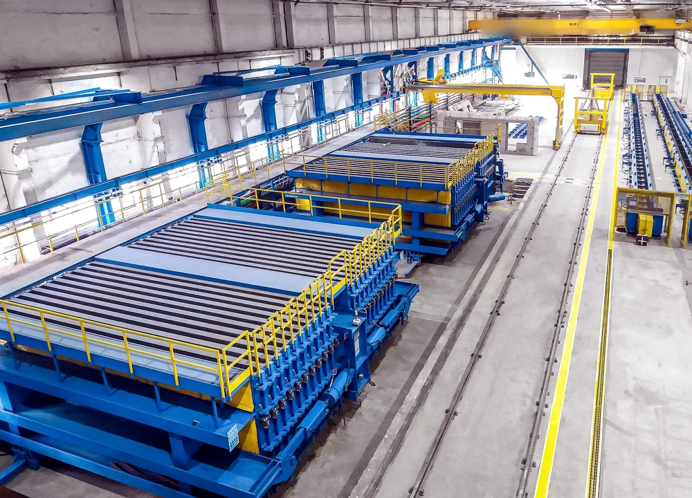
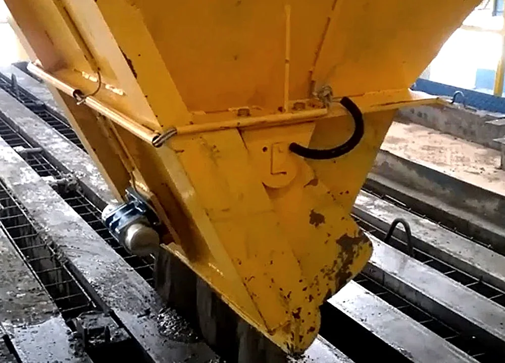
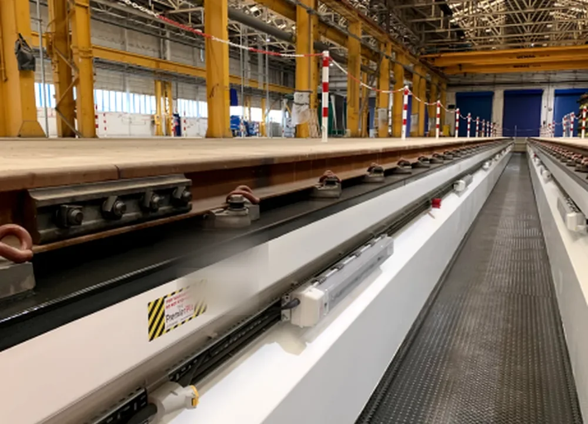
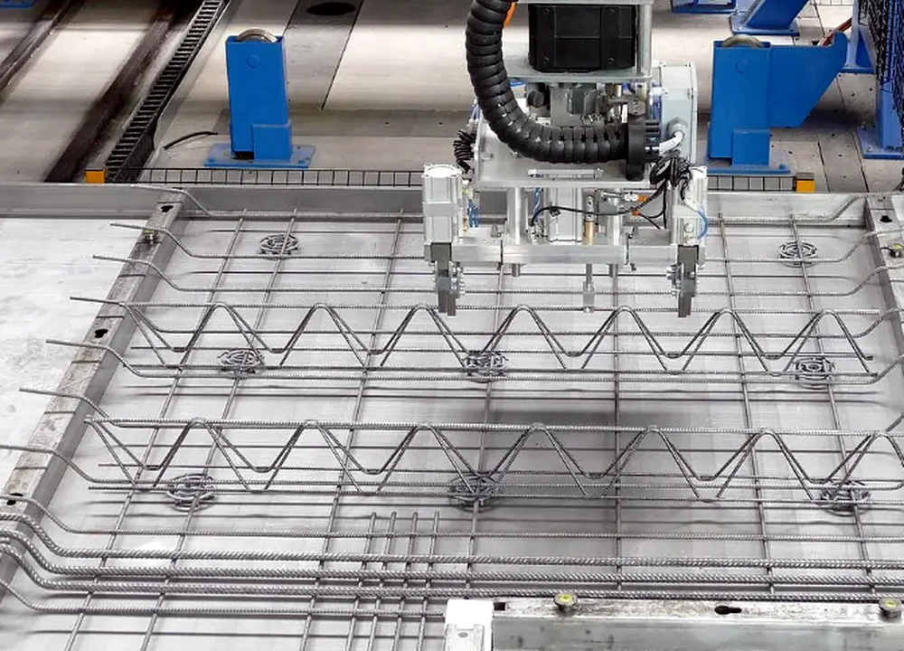
Serviços
Serviços técnicos para desenvolver, automatizar, programar, validar e fabricar soluções industriais
A ISAR pode atuar em módulos específicos ou assumir a integração técnica completa entre engenharia, software, fornecedores e implantação.
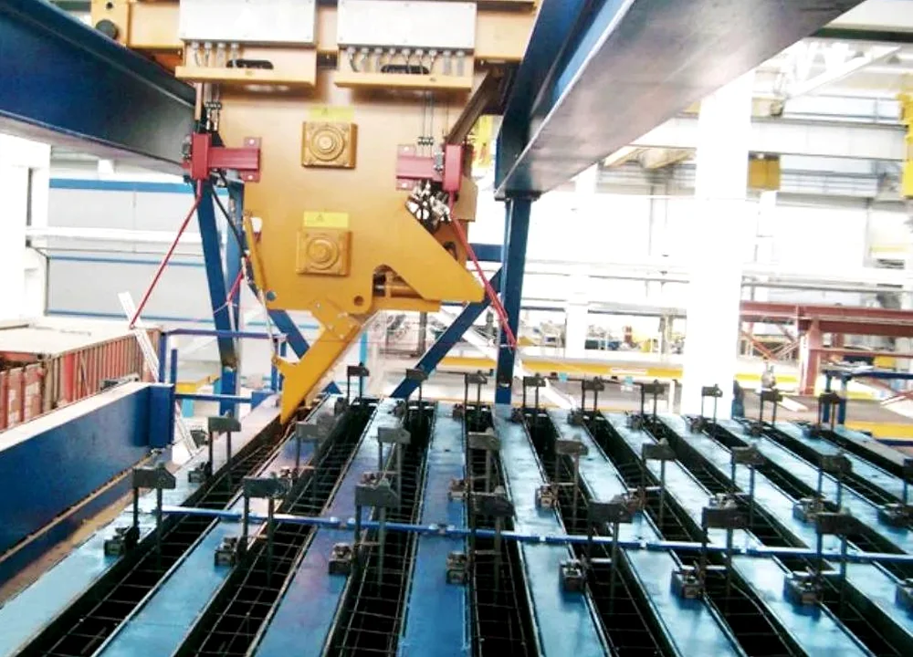
Engenharia mecânica
- Projeto 3D e documentação 2D
- Estruturas, mecanismos, dispositivos e máquinas
- Detalhamento para fabricação
- Lista de materiais
- Cálculos e simulações
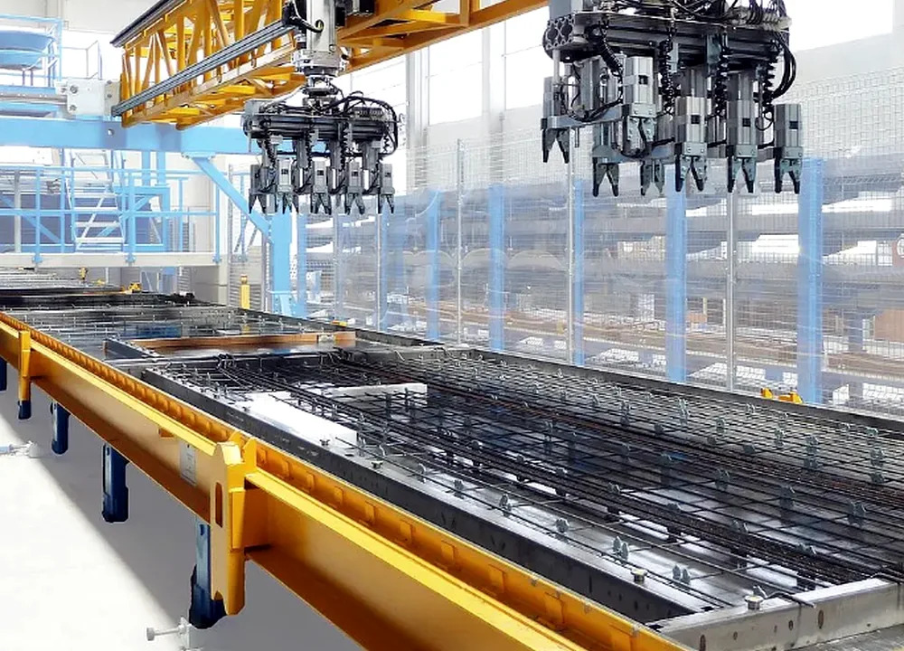
Automação e elétrica
- Sensores, atuadores e controle
- Diagramas elétricos e pneumáticos
- Painéis, inversores, fontes e integração de campo
- Comunicação industrial
- Lógica de controle e intertravamentos
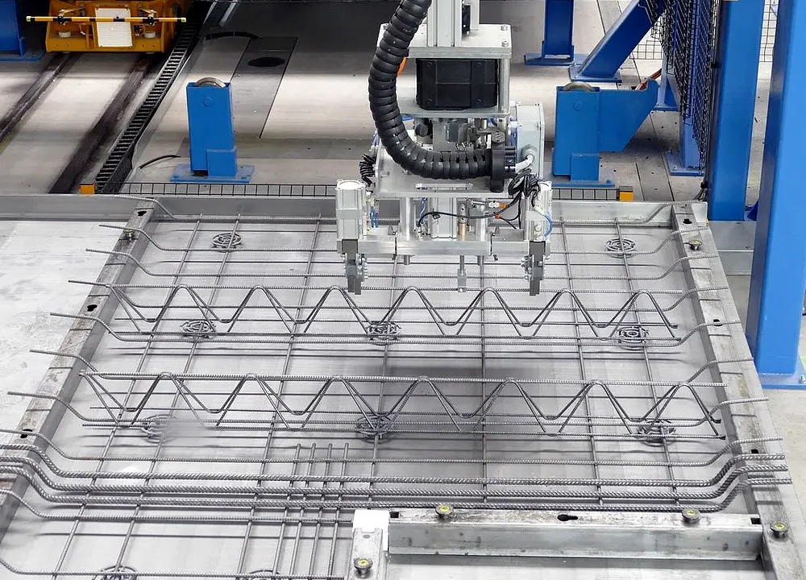
Visão computacional e software
- Software para automação e máquinas autônomas
- Inspeção automática e visão computacional
- Detecção de presença, contagem e posicionamento
- Aquisição de dados e integração com sensores
- Interfaces, lógica de operação e sistemas inteligentes
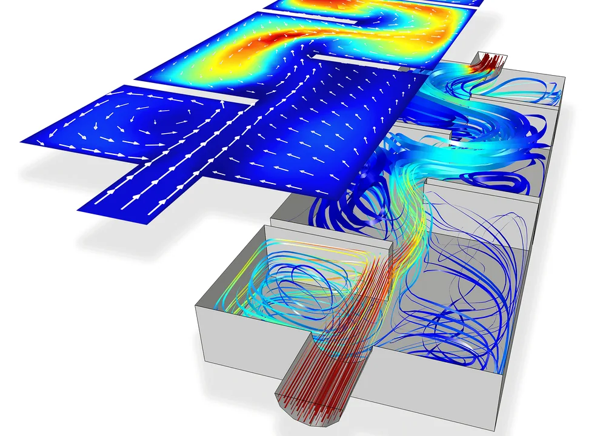
Cálculos, simulações e validação
- Análise estrutural e térmica
- Simulação fluidodinâmica
- Critérios de aceitação
- Validação e documentação técnica
Gestão técnica de desenvolvimento de fornecedores asiáticos
- Busca e pré-seleção de fornecedores na China
- Equalização técnica de propostas e escopos
- Customização de produto com o fabricante
- Revisão de desenhos, materiais e requisitos de qualidade
- Acompanhamento técnico de amostras, testes e entrega
Conversa técnica
Precisa desenvolver, automatizar ou customizar uma solução industrial?
Fale com a ISAR para avaliar requisitos, riscos, fornecedores e caminhos viáveis antes de investir em fabricação, importação ou implantação.
Contato
Agendar conversa técnica
A ISAR ajuda a transformar desafios industriais em próximos passos técnicos claros. A partir do primeiro contato, entendemos o processo, avaliamos o objetivo e alinhamos uma reunião para avançar com foco e viabilidade.